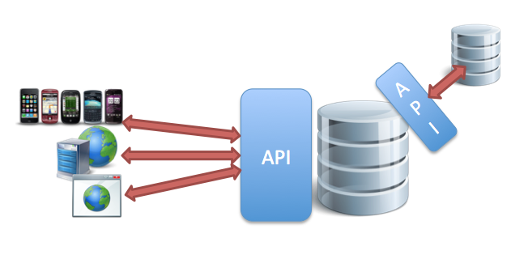
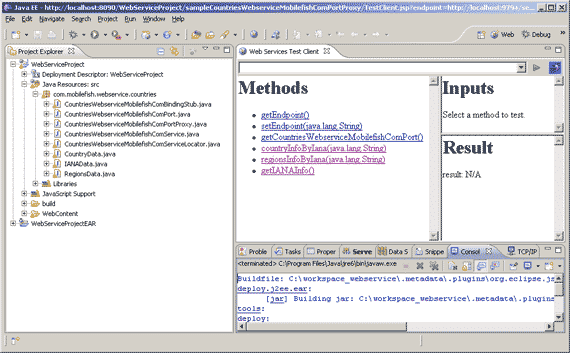
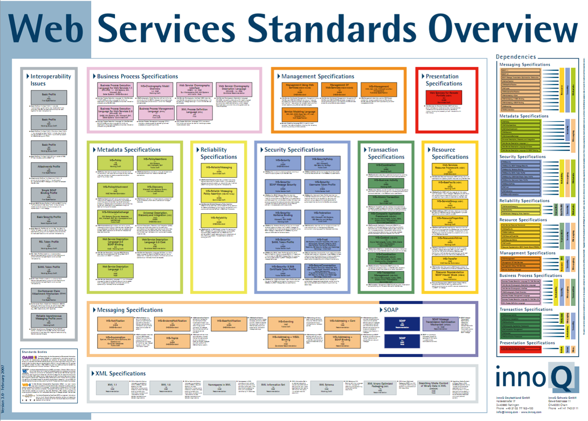
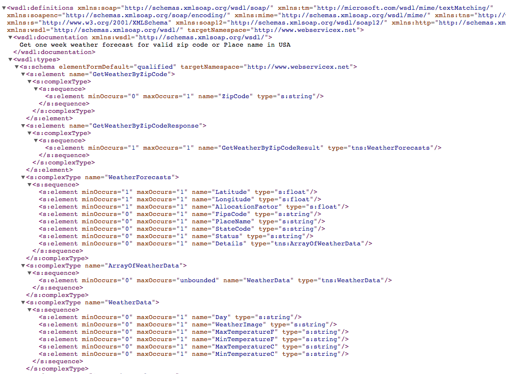
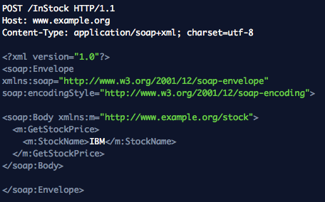
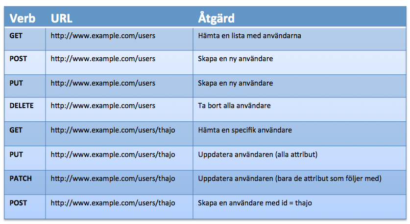
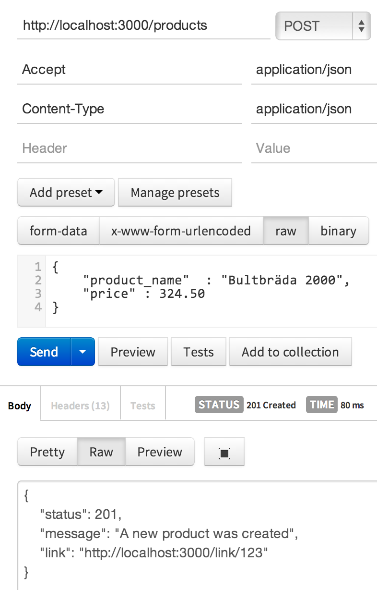
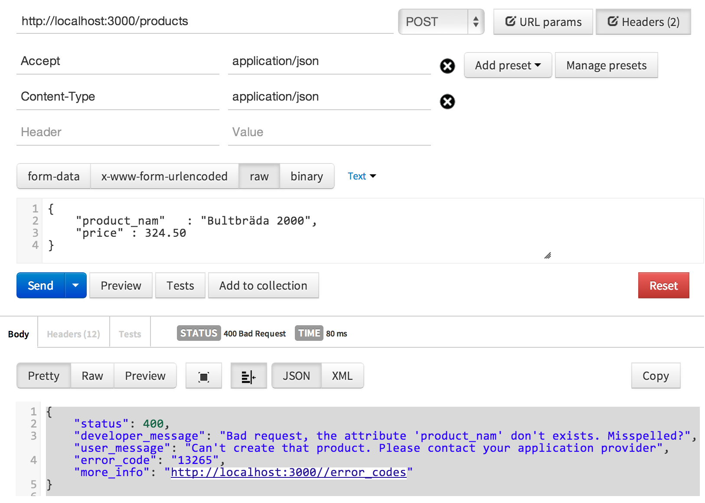

Webbramverk, 1DV450
Linnéuniversitetet, vt 2014
REST
Att bygga sig ett webb-API
Vad är ett webb-api?

Application programming interface
Skillnaden från en webbapplikation
Maskin till maskin
Distribuerade system

Varför?
- Utbyta data mellan system/applikationer
- Stöd för olika typer av klienter
- Använd vår data!
- Krav på öppen maskinläsbar data
Foto cc by:
http://www.flickr.com/photos/teegardin/
Vi har data, utveckla ni (twitter)
Plattformsoberoende, flera enheter och miljöer
Skalbarhet, utbyggningsbart
Mashups, en backend olika frontends

För vem skriver man ett API?
Foto cc by:
http://www.flickr.com/photos/sylvainkalache/
Historik
Behov av att kunna utbyta information mellan applikationer,
tjänsteorienterad arkitektur, SOA
- CORBA / DCOM
- RPC (Remote procedure call)
- XML
- Web Service (WS-*)
- ReSTful Web API
Web Service
Standardisering av W3C
Olika XML-applikationer
Möjlighet till automatgenererad kod

Enterprise, "Big Web services"
Transaction, Security, Hantering av state....osv
http://www.w3.org/2002/ws/
Web Service dumt namn
mycket automatiskt, mycket overhead

WSDL

SOAP

VS.
GET http://www.example.org/stockprice/IBM.json

REST
Foto cc by:
http://www.flickr.com/photos/joeshlabotnik/
REST
Representational State Transfer
Roy Fielding, 2000
”Architectural styles and the design of networked-based architecture”
http://www.ics.uci.edu/~fielding/pubs/dissertation/rest_arch_style.htm

REST användes egentligen som ett exempel på att visa hur webben fungerar

Vad REST inte är!
- Ingen standard, ingen RFC
- Inget protokoll
- Inget filformat
- Inget utvecklingsramverk
RESTful är en arkitektoniska stil
Foto cc by:
http://www.flickr.com/photos/rhymereverie/
Varför REST?
- RESTafarian eller pragmatiker?

Vad är REST?
- Varje "sak" är en resurs (resource)
- Varje resurs måste kunna adresseras (URL)
- En representation beskriver en resurs tillstånd
- En resurs kan ha flera representationer
- REST är tillståndslöst (stateless)
- Hypermedia as the engine of application state (HATEOAS)
- Bygger på de arkitektoniska principerna för webben
Foto cc by:
http://www.flickr.com/photos/remek/
Varje resurs måste kunna adresseras via en URL
- http://www.api.example.com/?method=getUsersByUsername
- http://www.api.example.com/createUser
- http://www.api.example.com/editUserByID
- http://www.api.example.com/users/GetProjectsByUserIDOrderByCity
- ...
Svårt att veta olika urler, stökigt
Varje resurs måste kunna adresseras via en URL
- http://www.api.example.com/v1/users
- http://www.api.example.com/v1/users/thajo
- http://www.api.example.com/v1/users/thajo/projects
- http://www.api.example.com/v2/projects/132654
- ...
Använd HTTP-verbs för att beskriva betenden
Ditt api behandlar resursen beroende på vilken HTTP-metod som klienten anropar med
- GET - Hämta en resurs
- POST - Skapa en resurs (bl. a.)
- PUT - Uppdatera en (hel) resurs
- DELETE - Ta bort en resurs
- PATCH - Partiell uppdatering, Tillägg till HTTP
- HEAD - Endast headers


POST vs. PUT
- POST är vagt definierad i HTTP specifikationen, "Data-handling process"
- POST-to-Append - POST används för att skapa nya resurser
- PUT - Modifiera en resurs tillstånd. Kan skapa om man skickar med nytt id. Vill man det?
- Overloaded POST - POST används till allt utom get (HTML-formulär)
Foto cc by:
http://www.flickr.com/photos/dm-set/
Idempotence

DELETE och PUT kallas idempotenta metoder
De kan anropas många gånger i rad men ger alltid samma resultat
Internet är ett osäkert nätverk. Timeouts.
Du vet inte om din DELETE slog igenom.
Foto cc by:
http://www.flickr.com/photos/dannyfowler/
HTTP Status Code
Ditt API meddelar klienten genom fördefinierade statuskoder i HTTP
- 1xx - Informational
- 2xx - Successful
- 3xx - Redirection
- 4xx - Client Error
- 5xx - Server Error
- 200 OK
- 201 Created
- 204 No Content
- 400 Bad Request
- 401 Unauthorized
- 403 Forbidden
http://www.w3.org/Protocols/rfc2616/rfc2616-sec10.html
http://www.flickr.com/photos/girliemac/sets/72157628409467125/
Exempel - Skapa en resurs
POST http://localhost:3000/products
Accept: application/json
Content-Type: application/json
...
{
"product_name" : "Bultbräda 2000",
"price" : 324.50
}
201 Created
Content-Type: application/json
...
{
"status": 201,
"message": "A new product was created",
"link": "http://localhost:3000/link/123"
}
Exempel - Skapa en resurs (postman)

Exempel - Felmeddelande

Multipla representationer

- En representation av en resurs kan ges i flera dataformat
- Klienten ska kunna efterfråga det dataformat man önskar via sin HTTP förfrågan
- Anges inte detta av klienten bör resursen returneras i ett "default" dataformat
- I sitt svar talar servern om i vilket dataformat svaret är
Foto cc by:
http://www.flickr.com/photos/crobj/
Accept: application/xml; application/json; text/csv
http://www.api.example.com/thajo.json
http://www.api.example.com/thajo.xml
HATEOAS
Hypermedia as the engine of application state
The model of application is an engine that
moves from one state to another by
picking alternative state transitions
in current set of representations
- Hypermedia binder samman resurser med varandra på ett maskinläsbart sätt
- Med HATEOAS leder servern klienten rätt via hypermedia
- Inkludera länkar i ditt APIs response?
Varför HATEOAS?
- Gör det enklare för klienten
- Flexibelt för förändringar, förändringar kommer ske!
- Förväntade routes kommer brytas!
- HATEOAS reducerar detta, lös koppling mellan server klient
RoR - hantera API
# request-objektet ger möjlighet att läsa av diverse HTTP headers
content_type = request.format
method = request.method
# Response-objektet använda för att uppdatera response heders
response.status = 400
response.headers['HEADER NAME'] = 'HEADER VALUE'
message_hash = {
"status" => 400,
"message" => "Bad media-type format; use application/json or application/xml"
}
respond_to do |format|
format.xml { render xml: message_hash.to_xml(:root => 'error')}
format.json { render json: message_hash.to_json }
end
 Denna presentation är licensierat under en
Creative Commons Erkännande 3.0 Unported Licens. (Där inte annat anges)
Denna presentation är licensierat under en
Creative Commons Erkännande 3.0 Unported Licens. (Där inte annat anges)